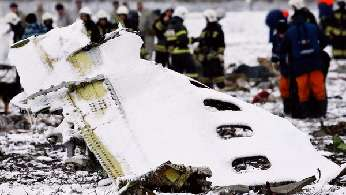

ПАМЯТЬ О ЧУДЕ
Мой календарь весь год вам об этом напоминал — что чудеса случаются. Сегодня годовщина одного из них, поразительного.
23 декабря 1984 года около Красноярска разбился самолет ТУ-154. Отказал двигатель, вспыхнул пожар. Машина стала терять высоту, врезалась в землю, разлетелась на куски. У 110 человек, находившихся на борту, не было ни одного шанса.
109 человек действительно погибли. Изуродованные фрагменты тел выносили на брезенте. Но один пассажир, молодой парень, каким-то совершенно феноменальным образом остался жив!
Я хорошо помню это происшествие. Меня в то время очень занимал феномен чуда. Я коллекционировал чудеса, их очень не хватало в повседневной советской жизни, и попробовал выяснить — как же именно спасся пассажир рейса 3519.
Интернета не существовало, я мог только рыться в газетах. В СССР о катастрофах сообщали лаконично и сухо, петитом на последней странице — чтобы не гнать негатива, поэтому в центральной прессе никаких подробностей я не обнаружил. Специально отправился в читальню, рылся в красноярской и иркутской прессе (рейс был Красноярск — Иркутск). Не нашел о чудесном спасении ни-че-го. Даже имени счастливца. Упоминался только возраст — 27 лет, да хвалили врачей, которые спасли «пострадавшему» жизнь. Да он не «пострадавший», он Принц Удачи! — думал я. Принц, увы, остался безымянным, Удача не разъясненной.
Журналисты любой другой страны мира устроили бы из этого поразительного фокуса Фортуны сенсацию: репортажи, интервью, телешоу. В скучной советской стране просто сомкнулись тучи. Так я и не узнал параметров чуда.
Может быть, и к лучшему, думаю я сегодня.
Чудо на то и чудо, чтобы обходиться без технических объяснений. Как сказано в стихотворении Бориса Поплавского: «Отпустите чудо. Не мучайте его пониманием.
Пусть танцует как хочет».